在线帮助手册
下载安装库存看板App，打开将进入登录页面，如下图1 :
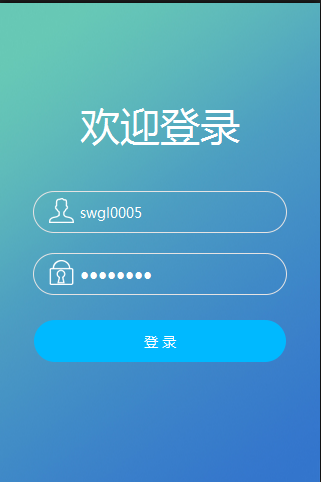
图1：库存app登录界面
登录成功之后进入首页，如下图2 :
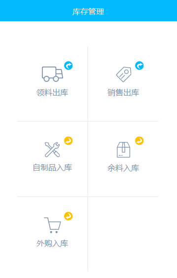
图2：库存app首页界面
点击领料出库项将进入领料单列表:见图3.1
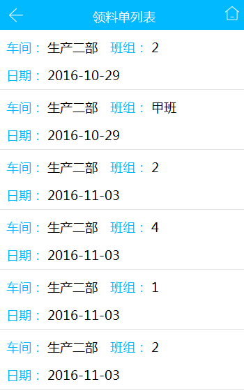
图3.1：库存app领料出库-领料单列表
点击领料列表任意一条数据，系统会自动显示该领料员对应车间的领料明细信息，您可以根据机台号筛选机台需领料的信息，每条信息上都有 ( 总领料件数 / 已领料件数 ) 。见图3.2
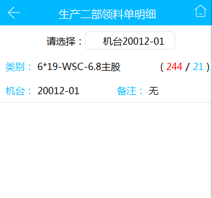
图3.2：库存app领料出库-领料单明细
点击一条领料明细数据将跳转到具体领料的类别信息，如领料的是丝将显示丝的表面状态，类别，结构，直径，强度 。右上方也出现扫码功能按钮。见图3.3
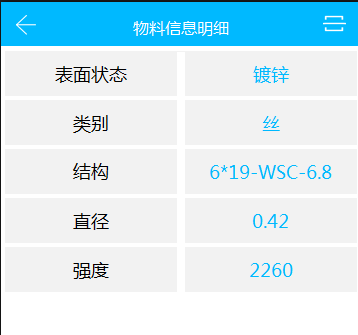
图3.3：库存app领料出库-物料信息明细
通过平板扫码器扫描工字轮编号或者手动输入工字轮编号之后，系统会匹配对应的工字轮信息，匹配成功之后则领料成功。见图3.4
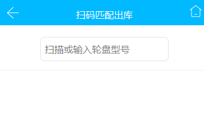
图3.4：库存app领料出库-扫码匹配出库
回到首页点击销售出库将进入扫描出售页面。见图4.1
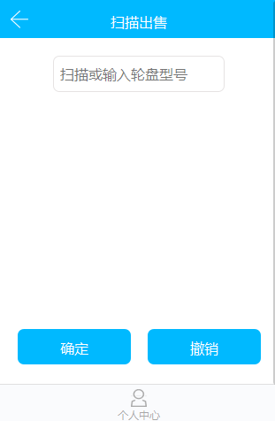
图4.1：库存app销售出库-扫描出售
扫描工字轮编号或者手动输入之后将显示将要出售这条数据的信息，点击确定那么将会出售成功，点击撤销则取消这次将要出售的物料。见图4.1.1
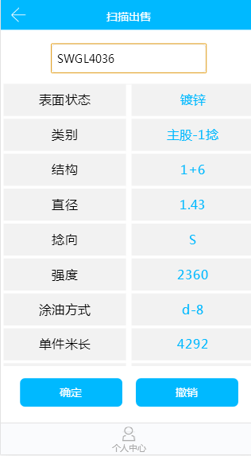
图4.1.1：库存app销售出库-扫描出售
回到首页点击自制品入库将进入自制品入库页面。见图5
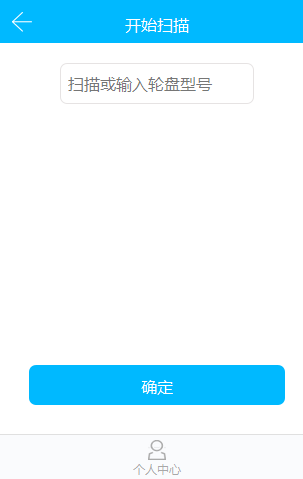
图5：库存app自制品入库-自制品入库
扫码工字轮或者手动输入工字轮编号，系统会显示对应的信息，点击确定则自制品入库成功。见图5.1
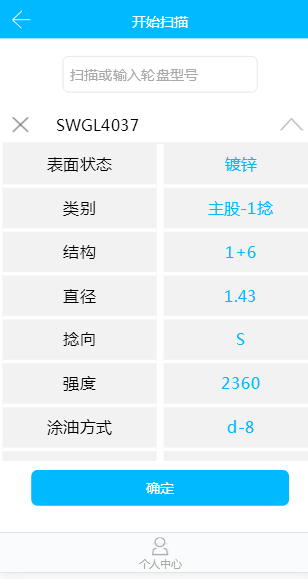
图5.1：库存app自制品入库-自制品入库
回到首页点击余料入库将进入余料入库界面。见图6
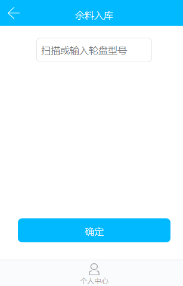
图6：库存app余料入库-余料入库
扫码余料的工字轮编号或者手动输入工字轮编号，系统将会显示该条信息，点击确定则余料入库成功。见图6.1
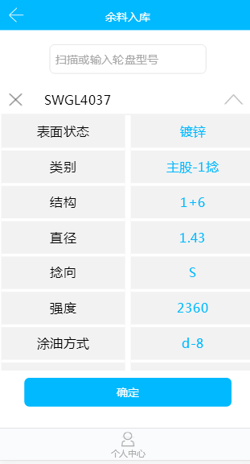
图6.1：库存app余料入库-余料入库
回到首页点击外购品入库将进入外购品入库界面。见图7
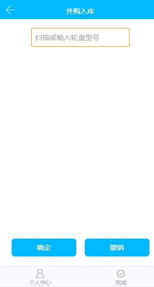
图7：库存app外购品入库-外购品入库
扫描工字轮编号或手动输入编号，如果该外购品工字轮编号存在系统内，系统会显示相应的信息，点击确定入库成功，点击撤销取消本次操作。见图7.1
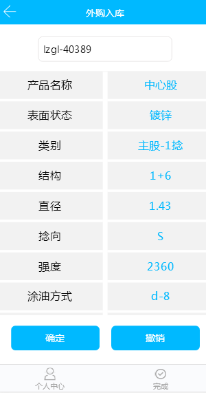
图7.1：库存app外购品入库-外购品入库
相对应的如果该工字轮编号不存在系统中，系统提供不同外购品分类模板填写之后保存即可。见图7.2,图7.3
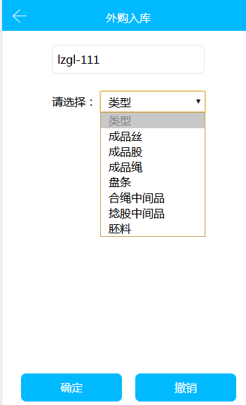
图7.2：库存app外购品入库-外购品入库
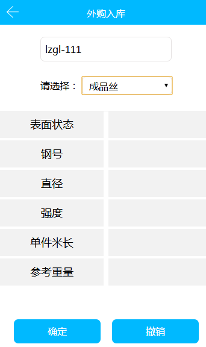
图7.3：库存app外购品入库-外购品入库
登录到库存看板系统。见图1
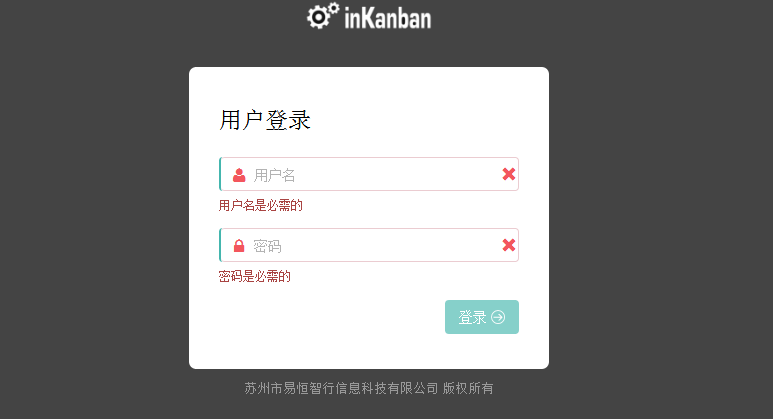
图1：库存pc端登录
库存看板外购品主页。见图2
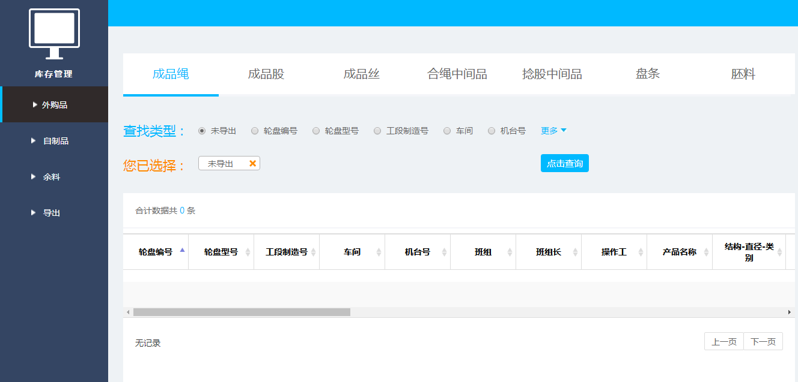
图2：库存看板外购品主页
库存看板外购品主页-类型选择项,通过点击不同的类型显示不同的类型出入库数据。见图2.1
图2.1：库存看板外购品主页-筛选类型项
库存看板外购品主页-筛选条件,通过点击查找类型的更多显示更新筛选信息像，比如：轮盘编号筛选项给用户自由现在从xx到xx编号，点击确定系统自动加入到您已选择项中，再点击查询按钮获取相应的筛选后的数据。见图2.2
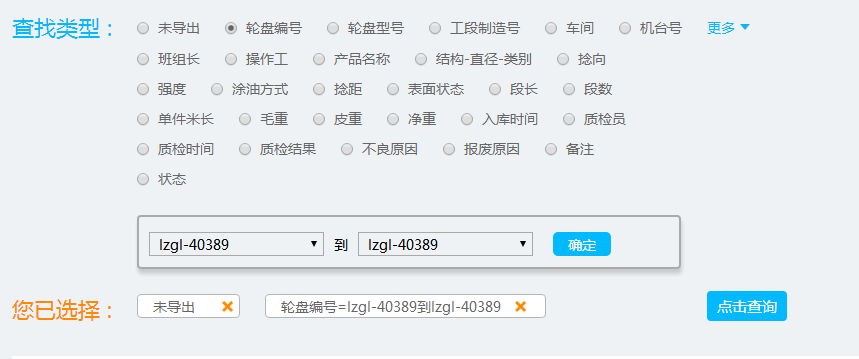
图2.2：库存看板外购品主页-查找类型
库存看板自制品主页。见图3
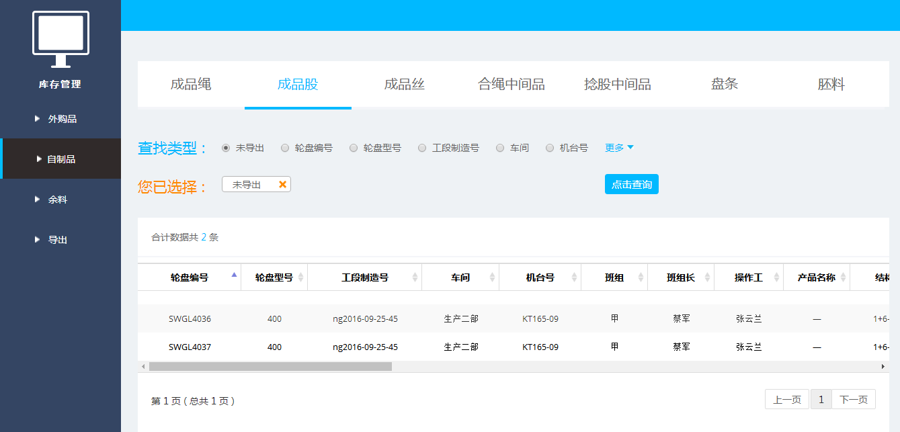
图3：库存看板自制品主页
库存看板自制品主页-类型选择项,通过点击不同的类型显示不同的类型出入库数据。见图3.1
图3.1：库存看板自制品主页-筛选类型项
库存看板自制品主页-筛选条件,通过点击查找类型的更多显示更新筛选信息像，比如：轮盘编号筛选项给用户自由现在从xx到xx编号，点击确定系统自动加入到您已选择项中，再点击查询按钮获取相应的筛选后的数据。见图3.2
图3.2：库存看板自制品主页-查找类型
库存看板余料主页。见图4
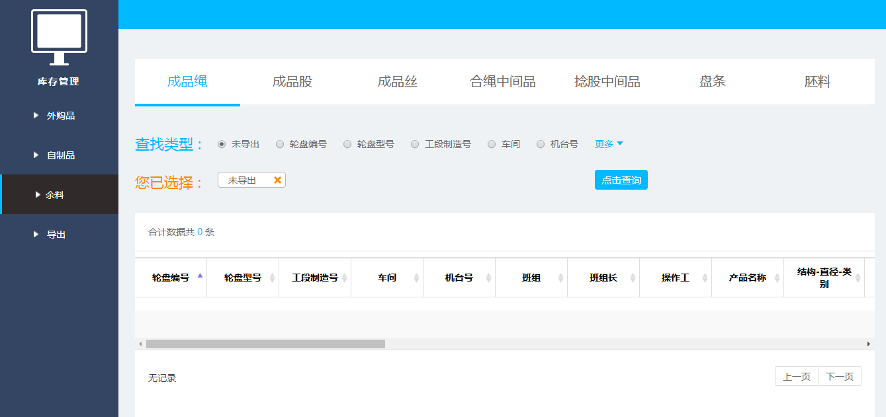
图4：库存看板余料主页
库存看板余料主页-类型选择项,通过点击不同的类型显示不同的类型出入库数据。见图4.1
图4.1：库存看板余料主页-筛选类型项
库存看板余料主页-筛选条件,通过点击查找类型的更多显示更新筛选信息像，比如：轮盘编号筛选项给用户自由现在从xx到xx编号，点击确定系统自动加入到您已选择项中，再点击查询按钮获取相应的筛选后的数据。见图3.2
图4.2：库存看板余料主页-查找类型
库存看板导出主页，可以点击已入库和已出库选择分别切换到不同的导出数据。勾选选框点击一键导出按钮浏览器会自动下载excel文件到本地。见图5
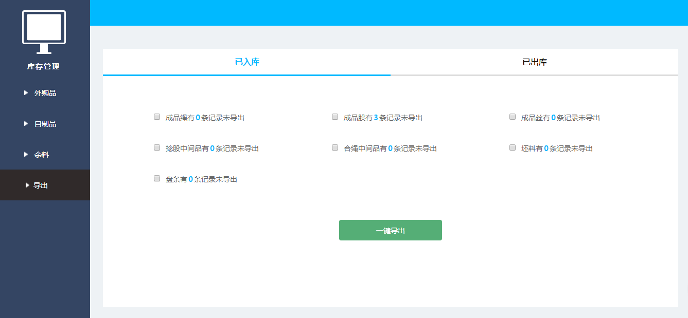
图5：库存看板导出主页